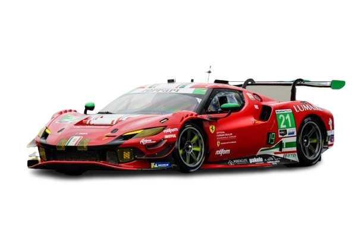

ferrari cars
Ferrari manufactures the finest and most luxurious cars that can be used for the family or as a sports car
Ferrari SF90 Stradale
The car’s name encapsulates the true significance of all that has been achieved in terms of performance
The reference to the 90th anniversary of the foundation of Scuderia Ferrari underscores the strong link that has always existed between Ferrari’s track and road cars

Ferrari SF90 spider
As the Prancing Horse’s first production plug-in hybrid spider
the SF90 Spider sets new performance and innovation benchmarks not only for the marque’s range but for the entire sports car sector
The new convertible has the same extreme supercar specification and record-breaking performance as the SF90 Stradale
Ferrari 296 GTB
The 296 GTB, an evolution of Ferrari’s mid-rear-engined two-seater sports berlinetta concept, represents a revolution
for the Maranello-based company as it introduces the new 120° V6 engine coupled with a plug-in (PHEV) electric motor capable
of delivering up to 830 cv. The car thus defines the idea of driving fun to provide pure excitement not only when pursuing maximum performance but also in everyday driving.
ferrari 296 GTS
The Ferrari 296 GTS, the evolution of Ferrari’s mid-rear-engined two-seater berlinetta spider concept, is powered by the new 120° V6 engine coupled with a plug-in (PHEV) electric motor that debuted on the 296 GTB, which unleashes a massive 830 cv in total. The car thus redefines the whole concept of fun behind the wheel, guaranteeing pure emotions not just when it is being pushed to its limits, but also in day-to-day driving situations.
ferrari 812 GTS
THE V12 SPIDER RETURNS
800 cv makes it the most powerful production convertible on the market
ferrari purosangue
The Ferrari Purosangue is the first ever four-door, four-seater car in Ferrari’s history, but models with two rear seats have played a significant role in the company’s strategy since the very beginning. Now, in the culmination of 75 years of leading-edge research, Ferrari has created a unique car and the encapsulation of the Prancing Horse’s DNA, where performance, driving pleasure and comfort coexist in perfect harmony. And that’s why this new model was called Ferrari Purosangue – Italian for thoroughbred.
ferrari portofino M
The Ferrari Portofino M, which features the legendary ‘M’ suffix, for Modificata, in its name, is the evolution of the Ferrari Portofino. The new Prancing Horse 2+ spider boasts a slew of new technical and design features, most notably an 8-speed dual-clutch gearbox and a five-position Manettino, an absolute first for a Ferrari GT convertible. Every drive aboard the Ferrari Portofino M is a voyage of (re)discovery.
Ferrari Roma
The Ferrari Roma is an elegant 2+2 grand tourer inspired by the carefree, pleasurable lifestyle of Rome's Dolce Vita years. Powered by a 620 cv V8 turbo engine, the Roma offers exceptional handling and performance wrapped in an aerodynamically advanced body with a distinctive coupé profile. Luxurious interior and advanced driver assistance systems make it equally suitable for
ferrari roma spider
The Ferrari Roma Spider is the open-top evolution of the Roma coupé, combining advanced performance with sleek styling and a luxurious cabin. Powered by a 620 cv V8 turbo engine, it offers exhilarating driving pleasure in the fresh air. With its retractable hard top that disappears beneath a layered decklid, it brings an added dimension of freedom and enjoyment to grand touring.
super cars
| cars |
Engine |
displancement |
Top speed |
| la-ferrari |
|
v12 |
6262cc |
350km/h |
| Gt3 |
 |
v6 |
2992cc |
600ph |
| F40 |
 |
v8 |
2936.25cc |
351.5kw/h |
| Enzo |
 |
v12 |
5998.80cc |
350km/h |
| F50 |
|
v12 |
4698.50cc |
325km/h |
| 28-Gto |
 |
v8 |
2855.08cc |
305km/h |